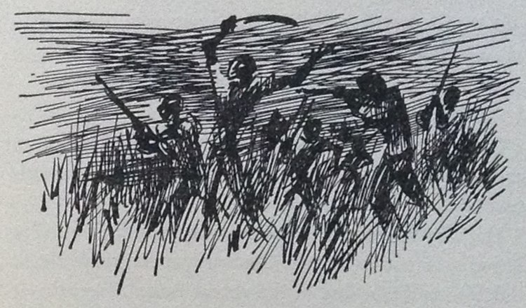

The Sawmill at Luvo
aosO livro “The Fabric of Terror — Three days in Angola”, por Bernardo Teixeira, publicado nos E.U.A em 1965, é um relato de vários episódios passados em Angola adaptado a livro.
Um dos episódios passou-se numa serração do Luvo, é referido neste artigo de jornal, e confirmado pelos autores noutro.
OPUS CITATUM
The Fabric of Terror — Three days in AngolaBernardo TeixeiraThe Devin-Adair Company, 1965págs. 75 – 905. The Sawmill at Luvo
The macabre story of Luvo — a village border post between Angola and the Republic of the Congo, not far from the Congolese river port of Matadi — was heard but not really publicized immediately after that morning of horrors. It came to outside attention for the first time through a front page story in the French newspaper, Le Monde, on July 5, 1965, in the form of an interview by a journalist, Pierre de Vos, with leaders of the U.P.A. organization in Leopoldville.
Less than a year later, when I visited the diamond mining territory of Lunda, near the Katanga border, I met by accident the weather-bitten truck driver who had arrived at Luvo at dawn on the fifteenth of March.
As we sipped mugs of beer at the bar of a tavern in Saurimo, the gateway to the huge mining concession of Diamang, he told me, with great emotion and sweeping gestures, of his adventures. The story that follows was reconstructed from the notes I made at the time, as well as from reports of other men who had not actually seen the slaughter themselves.

In the afternoon of March 14, 1961, Zacharias and his Kimbundo helper, Inhaca, arrived in the small town of São Salvador with a truckload of canned foodstuffs which they had brought from the costal town of Ambrizete, a small port more than halfway between Luanda and the estuary of the Congo River. After they had unloaded the shipment at the warehouse, Zacharias was told that there would be a cargo of empty wood crates for his truck to take on the return trip to Ambrizete — that is, if he cared to pick up the freight at the sawmill of Luvo which is a border village nearly forty miles to the north of São Salvador. Zacharias was pleased with the news.
“Boy, let us get on the road again, and we will get to Luvo in time for supper,” the driver said, turning to his helper.
“Let us not, boss. We will never make it in daylight, and the road is very bad,” Inhaca suggested, urgently. They had been on the road for ten long hours.
“Let us toss a coin,” Zacharias suggested.
“All right, boss,” Inhaca agreed.
Zacharias tossed the coin and he won easily. He always carried one coin with two heads and another one with two tails.
Halfway between São Salvador and Luvo, Zacharias began to regret his victory. The narrow, dirt road was in terrible condition due to the recent rains. Presently, it was nightfall and Zacharias’ kidneys and endurance gave up and he stopped the truck on a clearing by the road.
“Well, Inhaca, I guess you should have won the toss,” he admitted.
“I guess I should have, boss,” the Kimbundo agreed.
“We will sleep here and get back on the road before the dawn breaks,” the driver said, as he left the cab to stretch his legs.
“I guess we will, boss,” the helper agreed.
They shared a modest supper of bread and cheese and wine, supplies which the normally cautious Zacharias always carried in a tin box, after which they wrapped themselves in their respective blankets and went to sleep in the now empty trailer. Sometime before dawn they awakened and continued the journey.
Dawn was breaking when they arrived at Luvo, the village border post. They saw the two sleepy border guards, in their khaki uniforms, and waved to them, but they turned off to the sawmill before they reached the checkpoint. The road would go on into the Congo, to Thysville and Leopoldville.
The night watchman at the sawmill was still on duty, although the sun was rising, and he yawned and stretched his arms sleepily when the truck came to a stop.
“My name is Zacharias and this is my helper, Inhaca. I understand there is a load for Ambrizete,” Zacharias said, he alighted from the cab and offered a smoke to the night watchman who accepted it after he had readjusted the sling of his rifle.
“The crates are at the end of the yard. You can drive your trailer around and park it behind the crates,” the watchman said. “The boys should be here soon and they will load your trailer the first thing.”
“How are things up here?” the driver asked, to make idle conversation.
“I do not like it, but there is nothing I can do,” the watchman said.
“What do you mean?” Zacharias asked, sincerely puzzled.
“Something funny is going on, but I do not know what it is. Nobody in the village does,” the watchman answered. " Yesterday, a few of us went to the chief of post and told him that something funny was going on and that we were worried, and he asked, ‘what?’ and we could not answer, so he just shrugged his shoulders."
“Well, what is this funny thing that is going on up here?” Zacharias insisted, his curiosity increasing.
“Driver, I do not know,” the watchman said, wrinkling his forehead. “But something is not right. About half of the boys — they are all Bakongos — did not show up for work the last two days. And many of the other Bakongos around the village have been giving you a kind of funny look. And I have seen in the last few days a number of well-dressed blacks I have not seen around here before.”
“Well, maybe they are planning a robbery, or something -” Zacharias said, but he was interrupted by a sudden commotion in the village — yells, screams and a few rifle shots.
“Something funny is happening in the village,” the watchman said, with some panic. “I must take a look.” He removed the rifle from his shoulder and, carrying it in his hand, ran towards the village.
“I do not like it, boss,” Inhaca said. “Let us hide the truck in the back of the yard.”
Zacharias hesitated, but he decided to follow the Kimbundo’s advice, this time without tossing a coin.
“It must be a robbery. None of our business, anyhow,” the driver said, as he climbed back in the cab.
As they parked the truck in the back of the storage yard, behind the pries of wood crates, the sounds in the village reached their ears — frightful and piercing screams. Zacharias began to feel, with a premonition of horror, that this might be more than a case of robbery. They made a perilous climb to the top of a pile of crates from which they could see part of the village as well as the rest of the yard and the open side of the mill.
Their eyes could not believe what they saw. A crowd of yelling, shouting and laughing blacks were dragging through the dirt, into the sawmill, dozens of bodies, including the two sleepy guards that had been at the border post and the watchman who had walked out to see what the commotion was in the village. As it turned out, the bleeding bodies being dragged into the sawmill were forty-two, some of them women, and a few of them boys and girls in their teens — the entire white population of Luvo. The terrorist band must have numbered between two and three hundred, some of them wearing gleaming patent leather shoes, sports jackets and neckties, others wearing khaki trousers and sport shirts; still others barefoot, in dirty shorts. But they were all laughing and shouting as they flogged, with their catanas, the bodies being dragged through the dirt. The better-dressed terrorists carried rifles, but the majority had only the sharp-edged catanas.
“What in the name of God are they bringing the bodies here for?” Zacharias heard himself ask, as he felt a shiver of horror.
“Merciful God, merciful God!” whispered Inhaca, as he crossed himself repeatedly.
{kind=link}
They hid the best they could behind the crates on top of the pile, but they could see the entire scene through the cracks. Zacharias made a silent prayer to the good Lord that the terrorists would not spot the truck.
One of the band, obviously a worker at the sawmill, turned on the mechanical saw, and the belts and blades began to move. As Zacharias and Inhaca strained their eyes, they saw that many of the whites were still alive, moaning in pain, the blood dripping from their wounds which had been inflicted by catana blows on their heads, necks and chests. Some of the terrorists began to leap wildly around the mechanical saw. From where they were, Zacharias and Inhaca could not hear any words, only laughter. They were both nearly paralyzed with fright, and Zacharias felt that his fingernails were burning and buried in the still green wood of a crate.
The terrorists began to strip the clothes off the dead and off the ones still living. Then, they strapped the bodies, the dead ones and the still living ones, to the moving plank, lengthwise, as though they were logs. They pressed down the levers and the plank began to push the bodies into the buzz saw, feet first. A few piercing, dying screams reached Zacharias’ ears, and he had to take a deep breath not to faint. Inhaca had covered his eyes with the palm of his hand and he was swallowing hard.
Soon it was all over, and the terrorists left the sawmill, laughing loudly and waving their arms, like drunks returning from a gay party. They left nothing behind them but pitiful bits and pieces of human flesh strewn all over the place, and the blood still warm on the mechanical plane and buzz saw. The sun was now shining directly over the horror, but Zacharias and Inhaca kept their eyes shut and their bodies motionless, hoping foolishly that the nightmare would go away.
They stayed there a very long time, until there was not a single sound coming from the village. Then, they descended from the pile of crates and crawled through the grass to the first houses of the village. They found nothing but dead silence, empty houses with broken doors and windows. The people had been reduced to discarded fragments of humanity at the sawmill, and the terrorists had gone to celebrate elsewhere. But the chickens were still alive, and they were strolling closer and closer to the sawmill, their beaks smelling the dirt, attracted more and more by the odor of the dead.
Zacharias and Inhaca crawled back to the storage yard, got into the truck, and started on the road back to São Salvador. They had little choice; the alternative would be to cross the border into the Congo, but the danger there might be even greater. Zacharias was fully conscious that the terrorists might jump his truck at any moment, but his only choice was to drive on. In his dire predicament, he had one small consolation: he had enough gasoline if he were allowed to drive on, for he always carried several extra cans for emergencies. But he had no firearms, so he kept an iron bar by his side, to give himself an illusory sense of security.
“Boy, if those savages catch us, you run like hell one way, and I run like hell the other way,” Zacharias said. “They may go after me and leave you alone.”
“They will not leave me alone, boss,” the Kimbundo said, shaking his head.
It was almost dark when they reached the vicinity of São Salvador. Zacharias and Inhaca had exhausted their supply of bread and cheese, and they were famished. They had hoped, with misgivings, to fetch some food at São Salvador. But, at this point, a native in rags jumped from the bush into their path, waving his arms.
“May God have mercy on my soul!” Zacharias cried, thinking that the end had come, and he switched the engine to second gear to run over the man.
“Stop, boss!” cried Inhaca, as he went for the emergency brake. “That is no Bakongo!”
Zacharias brought the truck to an abrupt stop. The native, a boy of about twenty, rushed to the cabin. His name was Ulambo, and he was a Bailundo from southern Angola. He was a worker at the huge Primavera plantation near São Salvador. The terrorists had massacred all the Europeans at the plantation in the early morning, and also many of the Bailundo workers, but Ulambo and a few others had managed to escape.
“Hop in, boy,” said Zacharias to the Bailundo. “Who were the terrorists?”
“The Bakongo workers at Primavera, and others I know not. All speak Kikongo language,” Ulambo said.
“Can I go through the town?” Zacharias asked, as he started down the road again.
“Boss cannot. São Salvador full of terrorists,” the Bailundo said. “Ulambo know trail wide enough for wheels that take us to Madimba road past São Salvador.”
The trailer was empty, so Zacharias took the chance of driving through muddy paths. He drove in the dark, with the lights off, Inhaca and Ulambo walking ahead of the vehicle to show the way. Finally they reached the dirt road on the other side of São Salvador. From there to Bembe was approximately a hundred miles and the road was in very bad shape. Still, it would be some kind of road, rather than this muddy path. And from Bembe — if they should ever make it — to Carmona, going through Songo, would be another hundred miles.
Zacharias drove very slowly, still with the lights off, hoping and praying that the engine would not heat up too much, for he had to keep it most of the time in low gear. Inhaca and Ulambo moaned, and complained about hunger. Zacharias did not complain but he was as hungry as they were.
They passed cautiously through the small village of Madimba. Nothing stirred. It would be difficult to tell whether everybody was dead or asleep. Not a light, not a soul, not even a stray chicken they could grab for food. Later on, they found here and there trunks of small trees blocking the road. They removed them with their hands, but they saw no one. The hour was late and the bush was asleep. Two hours later they went through the small village of Lucunga. Again, not a light, not a soul, not even a chicken or a goat: They drove on towards Bembe.
They arrived in the vicinity of Bembe at dawn and they decided to hide the truck in a small bush by the road and cover it with tree branches. They hid there all day. Inhaca and Ulambo collected coconuts and edible fibres and a couple of tender snakes which they boiled. There was a small creek nearby and they got some water from it.
After nightfall they took off again, the lights still turned off. They had to go through Bembe. There was no other way.
“Brace yourselves, boys!” Zacharias said to his companions. “I am going to step on it.”
And he drove at top speed through the large and dark village, half-blindly, praying that no logs would be blocking the road. They saw and heard nothing. Not a light, not a soul, not a noise. Way out of Bembe they came to another silent village, Tomboco, and the road became better if not good. Past Tomboco, there was an intersection well known to Zacharias, and here he had to make a decision.
The road west led to Ambrizete and the sea, but it passed through the hills of Bessa Monteiro, and if the terrorists were there, they would not have the prayer of a chance. The road southeast led to Nova Caipemba, Songo and Carmona, but it would pass by the hills of Mucaba, which would also be the end of the world for them if the terrorists were around.
“What do you say, boys?” Zacharias asked, his mind vacillating.
Ulambo, the Bailundo, was for Ambrizete and the sea. He was probably eager to find his way by freighter to southern Angola. Inhaca, the Kimbundo, was for inland and Carmona, which would bring him closer to his home grounds, Malange. Zacharias pondered briefly on the choice, but he decided for Carmona. He figured that the path inland might be safer than the coast because, with a terrorist war on, the terrorist leaders would expect people to be running toward the coast, thus, they may be cutting off the roads in that direction. As the events were subsequently known, it turned out that Zacharias’ choice was a matter of life or death. Had he attempted to make the Bessa Monteiro hills, toward the coast, he would not have lived to tell the tale.
Again they drove in the dark. But as they reached the hills of Mucaba, near Songo, they found the road absolutely impassable; dozens and dozens of big logs had been thrown across the road. They drove the truck off the road, covered it with branches, and proceeded on foot through the bush toward Songo. They took with them tools as weapons and two containers of gasoline to use as bombs, if necessary.
Daylight was breaking. They bumped here and there into groups of refugees, natives. Some of them were also trying to reach Carmona, others were making their way northward toward the Congo. They told them of the massacre at Nova Caipemba and of the killings at Songo. The ones trying to reach Carmona were running away from the terrorists, but the majority, making their way northward, said that they had heard that the Portuguese paratroopers were coming and that they would kill all the blacks. Still others were running away without any place or aim in mind. There was great confusion, but Zacharias and his two companions kept on aiming for Carmona, bypassing Songo, and eating coconuts as they found them.
That night, the evening of the seventeenth of March, Zacharias, Inhaca and Ulambo reached Carmona. On the edge of town, they were greeted by a sudden yellow spotlight and the muzzles of vigilantes’ rifles.
“Who goes there?” shouted the leader of the vigilante patrol.
“Zacharias, truck driver from Ambrizete, and my helpers,” Zacharias answered. “I have a story to tell…”
“Approach, with your hands up,” instructed the patrol leader.